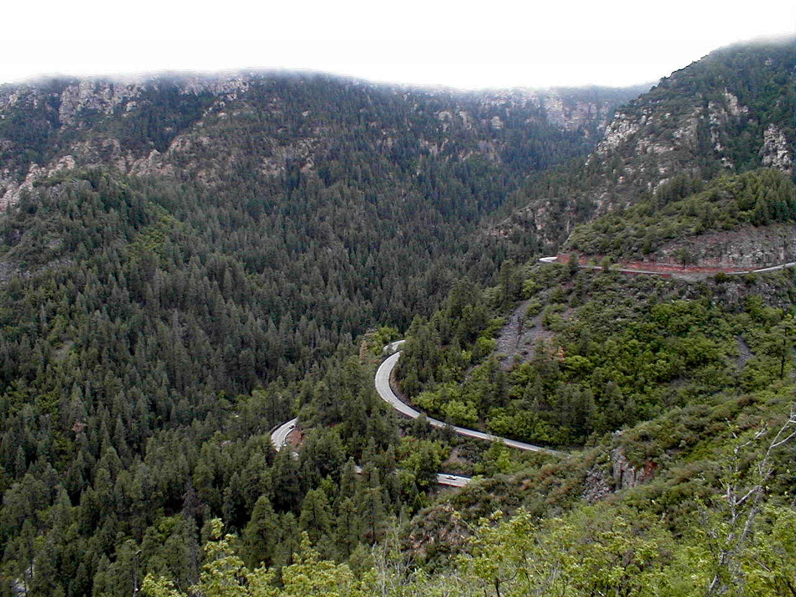

Day 7: May 19, Cottonwood, AZ to Flagstaff, AZPrevious Day - Home - Next Day Photo of the DayThe switchbacks up the side of Oak Craak Canyon. Keegan's LogDay 7: May 19, Cottonwood, AZ to Flagstaff, AZ Mileage: 47.57 milesWeather: 55-65 degrees, Overcast, Rain in the morning and afternoon Vertical Climb: 5020 feet Riding Time: 4.5 hours Today was rainy and cold, luckily our ride was relatively short. Dad and I put on our sunscreen then groaned as we opened the hotel room door, apparently it began raining at 3:30 in the morning in Cottonwood. After donning our raingear, we set out for our ride to Flagstaff. The rain has a tendency to soften tire rubber and float debris that has settled into the road, so the number of flat tires usually goes way up on rainy days. Dad had two flats by the time we reached Sedona, but by now we've gotten good enough at changing tires that it didn't slow us down much. The rain also added a little challenge itself, neither of us has ridden much in the rain before. The cold rain and the high 50s temperatures made for a cool ride, I was wearing a jacket and long pants and still shivering. We stopped at a small deli in Sedona, an old town just south of Flagstaff. Sedona is famous for its Red Rocks, which tower all around the city in large peaks. The area used to be an ocean millions of years ago, and the water had strange effects on the surrounding mountains, leaving jagged red peaks and water lines carved into the hillsides. The reds weren't as brilliant on this overcast day, but it was stunning nevertheless. Once I had finished my bagel in Sedona, it was time to head up Oak Creek Canyon to the sag at the top. Luckily the rain had let up by this point, though the sun still showed no signs of breaking through. We followed Oak Creek for a while (and stopped at a roadside Dairy Queen while I changed my flat tire), then began ascending the canyon walls to the summit. The road gradually got steeper, and the last bit was covered by a series of switchbacks. At the top we stopped at a scenic overlook which afforded a great view of the canyon and the switchbacks portion of the climb. We left the sag at the top pf the climb headed for Flagstaff. The road was still hilly, we were surrounded on both sides by forests of pine trees. Within five miles of town it began to rain, and then pour. Dad pulled up along side of me as we neared the hotel and remarked on what a great time this is. We may have been miserable, but we were happy. We arrived at the hotel and hung up our rain-drenched gear, then sat around the fire to warm up. The hotel staff provided us with hors d'oeuvres and drinks, we headed to Coco's for dinner after the route rap meeting. Tomorrow is our first day off, we plan on renting a car and driving up to see the Grand Canyon. Time for some much needed rest now though... Phil's LogDay 7, Flagstaff, AZ Chuck went over the bank of te road today to water the flora. On the way back, he found a $20 bill folded and hidden under a tree root. I'll write about Chuck and Karen in a future letter. As usual, I put on my sunblock this morning as I "dressed", dressing consisting of only bicycling shorts (Tracy forbids underwear), a cycling jersey, and flimsy socks. Opened the door to walk down to the motel office, and discovered it was raining pretty hard. Re-packed for the day a little, gloves into my rack trunk and I broke out my bicycle rain suit - waterproof jackets (bright yellow for visibility) and black long pants, all calendered rip-stop nylon. We walked to the diner for breakfast, then pumped up our tires, clicked in our cleats, and were off in the rain. I discovered immediately that every part was going to get soaked, the question was really warmth. Wet desert has a wonderful smell, and it was all pervading. We saw a few more of the thistles tat remind me of my friends in Devon, England, and pedaled as the landscape filled with beautiful red rock formations. The rocks here are sedimentary, the product of past ocean deposits. The capstone is often hard, underlying layers much softer and eroded, and it makes for stunning formations. I had never realized that Arizona was so pretty. Tracy was most apologetic that it was rainy and not so glorious, but to one who had never really seen the area it was quite stunning, Much of the road, Route 89A, was old road, and I could picture a young Barry Goldwater having driven the same road with his camera in search of the photographs of the state he so loved. I'd love to come back with the same intent. An early light lunch was had in Sedona. By that time I had already had two flats, both due to a small rock chip that I couldn't find the first time. I'm still on my original tires, but many tubes later. I noticed as we were leaving Sedona that Keegan's rear tire looked low. We stopped at a Dairy Queen as he changed that, and I ate a junior hamburger as I sat at a table with rubber cement and patches repairing my two earlier tubes. I recalled a story my Dad told me of driving from Indiana to California on four brand new tires. By the end of the first day, each had been flat. Lots of climbing again, switchbacks up Oak Creek Canyon to a sag at a lookout for cookies and Gatorade. Those climbs can be long and taxing, but at least the rain had stopped and the roads were drying. Sags at the top of mountains are the best. We hit a maximum altitude today of 7010 feet and climbed a total of 5020 feet. It was still cold at the mountain top and we still had more ups and downs to get to Flagstaff. The skies ahead at one point got real dark. Sure 'nuff, the skies opened again for the last five miles and we were quite soaked and chilled as we finally rolled into our hotel. Ethel had beaten us by nearly two hours, and hasn't had a flat on the tour yet! Tomorrow is an off-day. I've rented a car and five of us will go to see the Grand Canyon, No bicycle seats, thank you. By the way, for those that included good wishes in thoughts and prayers, my left Achilles is better. It is still a little swollen, but hurts actively less often and doesn't seem to hurt my progress. Thanks for the good wishes, they helped. And to those that have pledged to help support the Diabetic Youth Foundation, thanks also. Each uphill mile goes easier knowing that it is a little more funding for a wonderful cause. (For those just tuning in, I'll talk about it again in the future.) |
{kind=link}